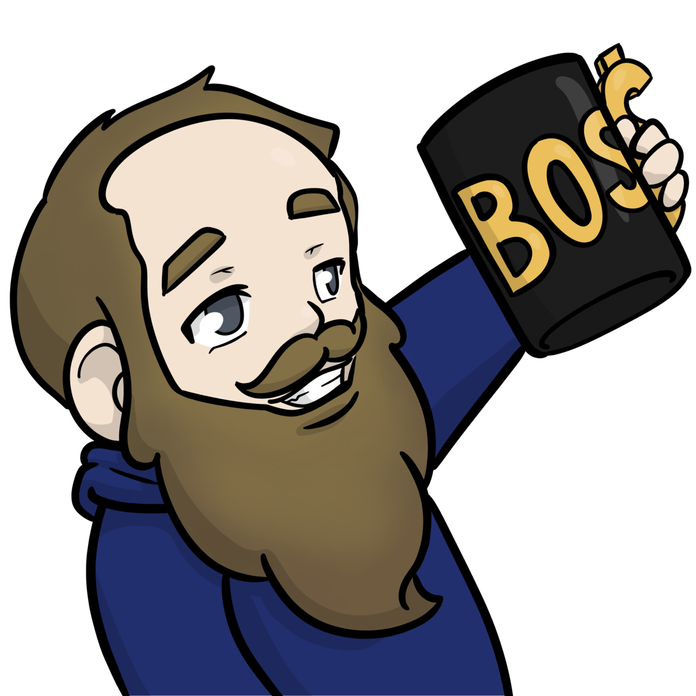

indie.io
As Marketing Manager and Project Lead at indie.io, Ben published, marketed, and managed 75+ indie games in under 18 months — across PC, console, and mobile — within a 200+ title active portfolio that generated 3M+ Steam wishlist additions and 1.3M+ units sold during his tenure.
Beyond managing titles, Ben built a full suite of internal tools: Steamworks automation, creator outreach platforms, festival submission workflows, developer communications systems, and a press kit platform — turning what had been the most labor-intensive parts of the job into streamlined, repeatable processes.
